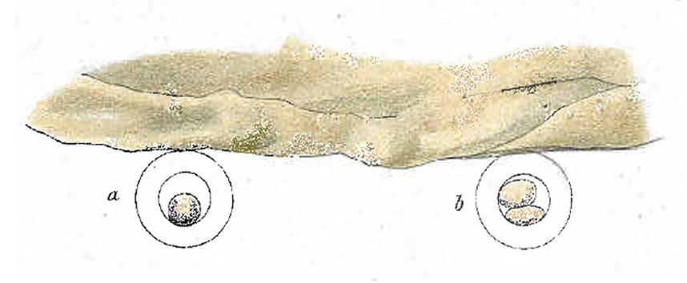
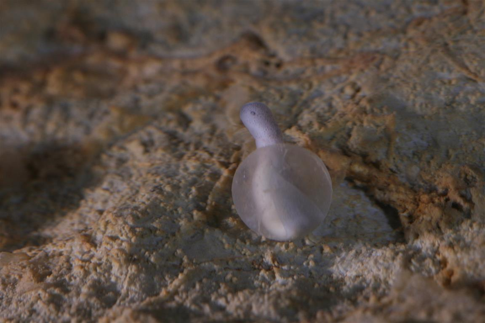
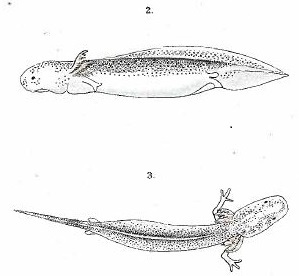
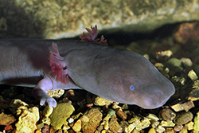

Bela človeška ribica (Proteus anguinus anguinus)
Opis
:
Repata dvoživka (Amphibia, Urodela, Proteidae), edini evropski vretenčar, prilagojen
na jamsko okolje. Koža je brez temnega pigmenta (rahlo opazen le pri ličinkah), ki
se na svetlobi lahko ponovno razvije, rahlo rožnata zaradi presevanja krvi, včasih
rumenkasta zaradi vitamina B2. Podobno je z očmi, ki so delno razvite le pri
ličinkah, pozneje pa zakrnijo in jih preraste koža.
Voh in okus, posebej pa
sluh, so dobro razviti; dobro zaznava okolico tudi z drugimi čutili, ki jih
sestavljajo elektroreceptorji (spremembe električnega in magnetnega polja). Na
svetlobo je občutljivo vse telo. Diha z zunanjimi škrgami in s kožo; preprosta
pljuča so manj pomembna. Od strani sploščen rep, ki ga obroblja kožna plavut, je
prilagojen plavanju. Dva para kratkih nog, ki sta daleč narazen, s po tremi prstki
na sprednjem in po dvema na zadnjem paru, le pomagata pri gibanju. Spolno zrelost
doseže pri 14 letih, čeprav vse življenje ohrani obliko ličinke (absolutna
neotenija).
Zraste 25 do 30 cm (redko več) in je tako največja jamska žival na
svetu. Samec in samica se na zunaj le malo razlikujeta.
Življenjski prostor in zemljepisna razširjenost
Podzemeljske vode dinarskega krasa; črno podvrsto so doslej našli samo v Beli
krajini (Slovenija).
Hrana: Plenilec; različne manjše vodne
živali. Več let lahko preživi brez hrane.
Razmnoževanje: Po
ugotovitvah v laboratorijih leže jajca (do 70; premer 12 mm); razvoj zarodka traja 4
mesece, odvisno od temperature vode. Živorodnost (ovoviviparnost) je vprašljiva,
morda le izjemoma; opisana v nekaj primerih.



Razmnoževanje človeške ribice (odlomek iz dokumentarnega filma “The Human fish or European cave salamander”, Prirodoslovni muzej Slovenije, 2000)
Življenjska doba
Neznana, v jamskih laboratorijih do 100 let.
Sorodstvo: Rod
Necturus (vzhodni del Severne Amerike); med recentnimi evropskimi
dvoživkami nima sorodnika.
Izvor: Nepojasnjen; relikt
terciarne favne, ki je preživel ledene dobe.
Ogroženost:
Ranljiva vrsta (črna podvrsta tudi izjemno redka). V Sloveniji je zavarovana od leta
1951.
Black Proteus
Črna človeška ribica (Proteus anguinus parkelj)

Proteus anguinus parkelj (photo: G. Aljančič).
Nenavadno populacijo človeške ribice, ki živi v enem samem jamskem sistemu v Beli krajini na jugovzhodu Slovenije (<30 km2), so na veliko presenečenje odkrili šele l. 1986 (Andrej Mihevc, Inštitut za raziskovanje krasa ZRC SAZU). Čeprav so dosedanje genetske raziskave pokazale tesno sorodnost s sosednjimi belimi populacijami, pa se že na prvi pogled od njih močno ločijo. Najbolj je opazna temno obarvana koža ter bolje razvite oči, tudi pri odraslih osebkih. Črne človeške ribice so tudi po številu izjemno redke, za vedno jih lahko izbriše že lokalno onesnaženje.
Od l. 2002 jih preučujemo v Jamskem laboratoriju Tular.
glej tudi Media:
Črna človeška ribica. M. Recek et al., O živalih in ljudeh, RTV Slovenia/ TV Maribor, May 4, 2013 (oglejte si od 7:10)
Izvirni zapisi o projektih in laboratoriju. Datumi in zgodovinsko izrazje so ohranjeni.